云流体与物理天空

本教程将为您介绍如何使用 Maya 流体容器和 physical_sky 渲染多云天空。首先，我们使用一个云预设，并对 Maya 流体的一些着色属性进行微调，以获得最佳的效果。最后，我们将介绍如何对流体设置动画，从而获得适用于延时或摄影机飞越的效果。
要下载对应的场景，请单击此处。
从 Visor 导入流体
- 在此示例中，我们首先使用“内容浏览器”(Content Browser)窗口 Fluid Examples 下 CloudsandFog 文件夹中的一个云流体预设。右键单击 CloudsSun.ma，然后选择“导入”(Import)。
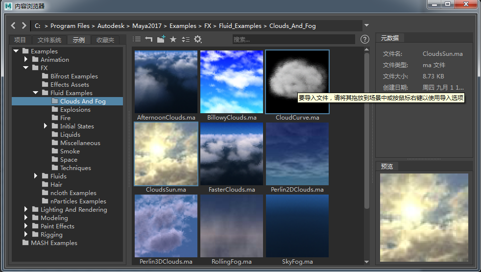
导入流体预设“CloudsSun.ma”
- 删除点光源 -“太阳”。仅保留“云”流体。使用摄影机 CloudsSunCamera 渲染场景。在没有任何场景照明的情况下，渲染结果应如下图所示：
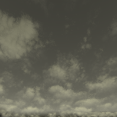
没有场景照明的“CloudLayer”流体渲染
创建物理天空
- 创建一个 skydome_light_，并将一个 _physical_sky 连接到该 _skydome_light.color_（您可以使用鼠标中键从 Hypershade 窗口的纹理选项卡中拖动 aiPhysicalSky）。
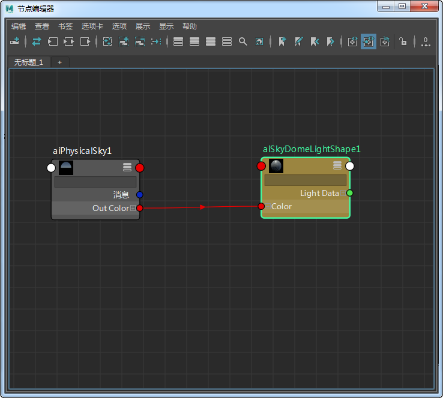
physical_sky -> skydome_light
- 渲染场景。如果使用默认设置，则场景应如下图所示。该场景看起来很不错，但我们可以通过添加物理天空并调整 Maya 流体的一些着色属性进一步改善其效果。
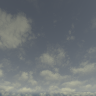
- 天空看起来有点暗。我们需要增加其亮度，并向天空添加更多的蓝色。选择 physical_sky。将“强度”(Intensity)增加到 3，并将“天空染色”(Sky Tint)更改为浅蓝色。
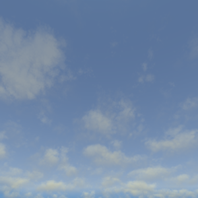
- 最后，通过调整 physical_sky 的“仰角”(Elevation)和“方位角”(Azimuth)属性定位太阳，使其对摄影机可见。
对流体进行着色
下面是有关此特定流体的一些说明：
- 它只使用恒定密度。
- 着色 Y 渐变具有很强的边衰减。
- Y 渐变颜色、白炽度和不透明度输入在很大程度上构成云的颜色和形状，而具有柏林噪波的纹理不透明度提供云的细节。
不透明度(Opacity)
云看起来有点松散。我们可以通过降低透明度和不透明度使其更密集。将透明度与不透明度结合使用可确定有多少灯光可以穿透流体密度。首先，我们使用不透明度。您可以在下面看到调整“不透明度”(Opacity)的“输入偏差”(Input Bias)的结果。您可能要尝试使用此值。您可以尝试使用 0.3，该值应该会为您提供一些大且密集的云。
| 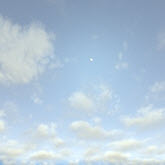 | 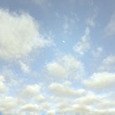 | 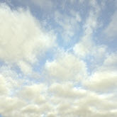 | 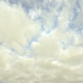 |
| 不透明度“输入偏差”(Input Bias)：0.1 | 不透明度“输入偏差”(Input Bias)：0.2 | 不透明度“输入偏差”(Input Bias)：0.3 | 不透明度“输入偏差”(Input Bias)：0.4 |
透明度(Transparency)
使用透明度值可以进一步优化云的不透明度。仅增加“透明度”(Transparency)值可产生以下效果：
| 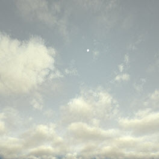 | 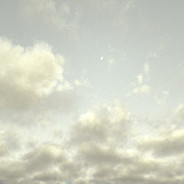 | 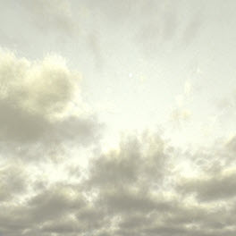 | 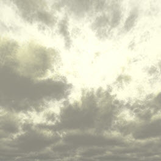 |
| 0.1 | 0.05 | 0.03 | 0.01 |
我们还可以调整透明度的颜色值以实现彩色不透明度。
- 单击“透明度”(Transparency)旁边的颜色拾取器并增加饱和度值。在下面的示例中，使用了下列值：
色调(Hue)：1.042。饱和度(Saturation)：0.243。明度(Value)：0.067
通过调整 HSV，您应该能够获得一些有趣的彩色云。您可能要尝试将此值与物理天空的“方位角”(Azimuth)结合使用，以获得一些有趣的天空效果。
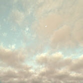
更改“透明度”(Transparency)的 HSV 可以产生有趣的彩色多云天空
可以增加以下 Maya 流体着色属性值来提高流体内的细节程度和复杂性。
请注意，增加其中一些值（如“最大深度”(Depth Max)）将增加渲染时间。
频率(Frequency)
| 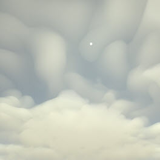 | 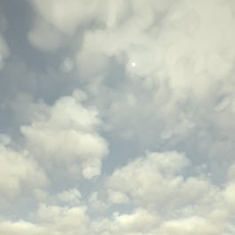 | 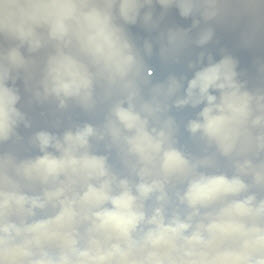 |
| 3 | 1.5 | 0.5 |
频率比(Frequency Ratio)
| 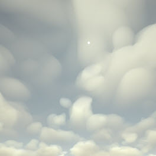 | 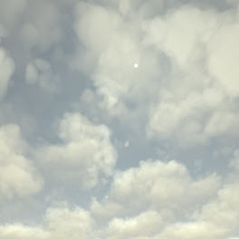 | 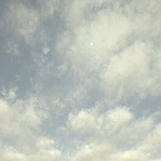 |
| 4 | 1.5 | 2 |
最大深度(Depth Max)
| 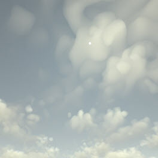 | 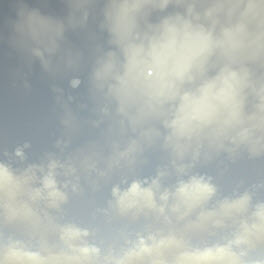 | |
| 3 | 4 | 2 |
比率(Ratio)
| 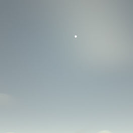 | 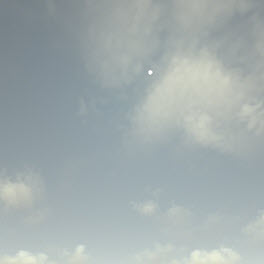 | 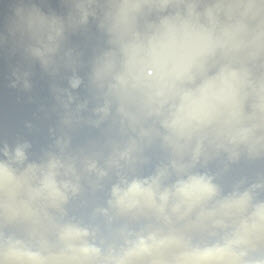 |
| 0.25 | 0.5 | 0.75 |
相位函数各向异性(Phase Function Anisotropy)
我们可以通过调整相位函数各向异性(Phase Function Anisotropy)来更改太阳光在体积内的“散射”方式。它位于 Maya 流体的 Arnold 属性内。
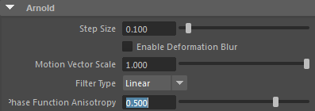
- 将“相位函数各向异性”(Phase Function Anisotropy)增加到 0.5 左右。请注意，光晕效果在太阳圆盘周围变得更明显。
| 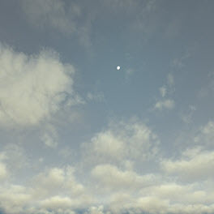 | 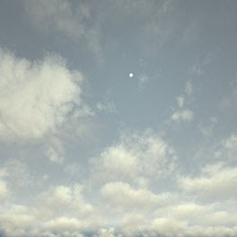 | 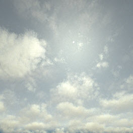 |
| 0 | 0.5 | 0.75 |
下面是使用“相位函数各向异性”(Phase Function Anisotropy)的另一个更“极端”的示例。
| 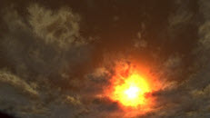 | 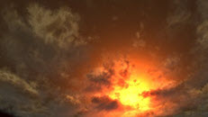 | 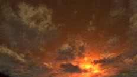 |
| 1 | 0.5 | -0.5 |
为云设置动画
我们可以为云的移动设置动画以创建延时效果。首先，我们使用蓝色天空并通过“着色 > 边衰减”(Shading > Edge Dropoff)构建云。然后，我们为“纹理原点 Z”(Texture Origin Z)设置动画以使云穿过 Z 轴移动。
边衰减(Edge Dropoff)
通过增加“边衰减”(Edge Dropoff)，我们可以使云的外观看起来更密集，“暴风雨”的效果更明显。增加此值会减弱流体内向云边缘的密度衰减。通过为此值设置动画，我们可以增加云层的形成。
| 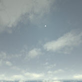 | 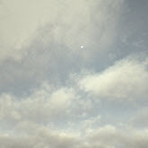 | 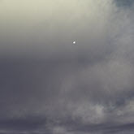 |
| 0.3 | 0.45 | 0.5 |
- 在第 1 帧中，使用较低的值（如 0.2）为“边衰减”(Edge Dropoff)设置关键帧。在动画的最后一帧（在本例中为 100）中，将值增加到 0.5，并为其设置关键帧。
| 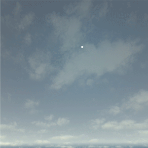 | 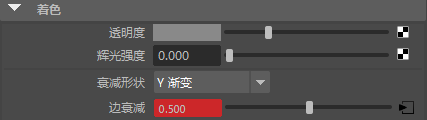 |
增加“边衰减”(Edge Dropoff)以查看流体云形式 (0.2-0.5)。
- 选择流体，然后转到“纹理”(Textures)。在第 1 帧处，将“纹理原点 Z”(Texture Origin Z)的关键帧设置为 0。转到第 100 帧，然后将“纹理原点 Z”(Texture Origin Z)的关键帧设置为 -2。这将为穿过负 Z 方向的流体纹理移动设置动画。
 |
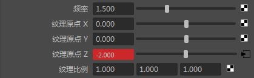 |
为“纹理原点 Z”(Texture Origin Z)设置动画以查看云沿 Z 轴移动。
Atmosphere_volume
目前，无法针对流体体积很好地生成 atmosphere_volume。这是因为大气返回一个不透明度覆盖在任何颜色背景的像素之上的单一平面结果。
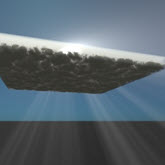
有关使用 Maya 流体和 physica_sky 渲染云的教程到此结束。这些设置也可以应用于其他 Maya 流体预设。请尝试使用不同的云预设，或将这些技术应用于您自己的 Maya 流体。
渲染示例
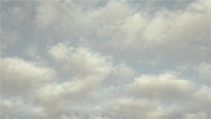

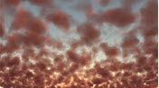